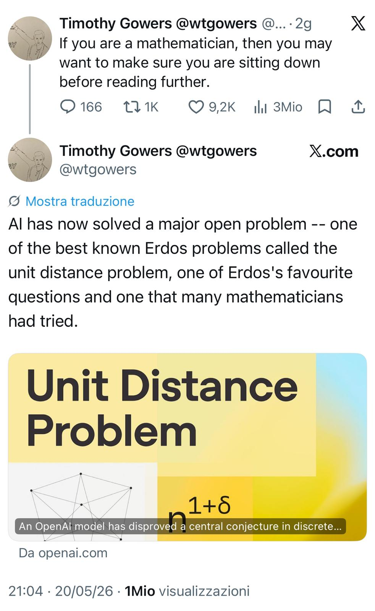
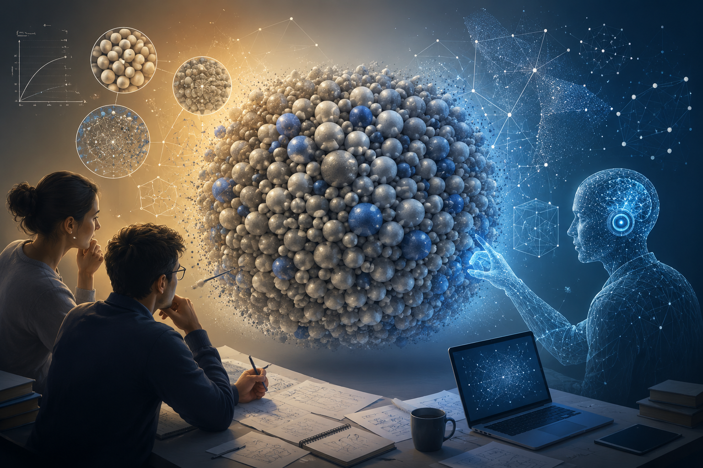
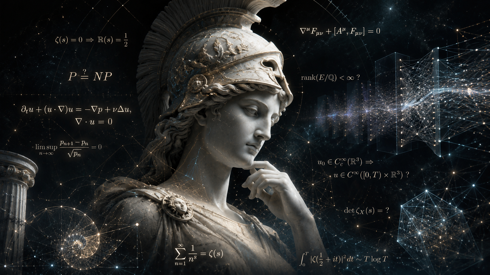
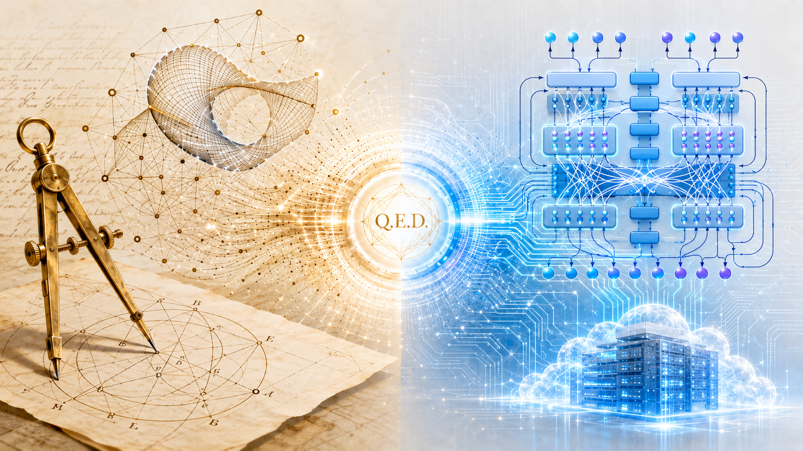

Scaling Laws After the Hype
What Practitioners Should Know About the Economics, Limits, and Current Shape of Modern AI
This article analyzes the announcement that an OpenAI reasoning model contributed to resolving a major conjecture related to Paul Erdős’s unit distance problem, a classical question in discrete geometry. Its central thesis is that the significance of the event does not lie only in the specific mathematical result, but in the type of capability it appears to demonstrate. A machine learning system did not merely calculate faster, retrieve known literature, or check a proof supplied by humans. It reportedly generated a non-obvious mathematical construction that survived expert scrutiny and contributed to the disproof of a long-standing conjecture. The article therefore treats the episode as an “Erdős moment” for artificial intelligence: a symbolic threshold at which frontier AI begins to enter one of the clearest domains of human abstract reasoning.
The article opens with the viral reaction of Timothy Gowers, whose warning to mathematicians to sit down before reading the news captured the psychological shock of the result. The importance of this reaction is not an appeal to authority, but evidence of expert calibration. Mathematicians are usually skeptical of claims about automated reasoning because genuine mathematical progress requires abstraction, analogy, construction, hidden invariants, proof strategy, and conceptual reframing. When a result surprises specialists in a domain where they have strong intuitions about what machines can and cannot do, the surprise itself becomes diagnostically relevant. It suggests that a capability boundary may have shifted.
The mathematical object at the center of the episode is the unit distance problem. Given a finite set of points in the plane, one asks how many pairs of points can be exactly one unit apart and what the maximal asymptotic behavior can be as the number of points grows. The problem is easy to state and hard to solve because it combines geometry, combinatorics, graph structure, asymptotic reasoning, and construction of extremal examples. Like many Erdős-style problems, it is simple at the surface and deep in its internal structure. This makes it a strong test case for artificial reasoning systems: brute force is insufficient, and rhetorical fluency cannot substitute for a valid construction.
The article emphasizes that the OpenAI contribution was not merely another benchmark result. Benchmarks can overstate capability because they are often narrow, contaminated, static, or weakly connected to real discovery. A contribution to a major open mathematical problem is different. The relevant output is not an answer selected from a known test set, but a mathematical object that must be interpretable, checkable, and meaningful to specialists. In this case, the reported construction disproved a central conjecture by showing that the true asymptotic behavior is larger than previously believed. The result is therefore not just a proof-like text; it is a contribution to the mathematical search space.
The article’s key distinction is between human-like understanding and operationally valuable reasoning. It does not claim that the model understands mathematics phenomenologically as a human mathematician does. That question may be philosophically interesting, but it is not the decisive engineering question. The decisive question is whether the system can reliably generate novel, valid, useful mathematical structures. From first principles, a system does not need to reproduce the internal mechanism of a human capability in order to externalize or outperform part of that capability. Airplanes do not fly by flapping wings, calculators do not possess number sense, and compilers do not understand software architecture. The analogous question for AI is whether it can perform enough of the external function of mathematical exploration to change the practice of discovery.
The technical shift identified by the article is guided exploration in abstract spaces. Modern reasoning models combine large latent representations learned from mathematical and textual corpora, probabilistic search over symbolic structures, iterative self-correction, long-context reasoning, tool-assisted verification, and reinforcement learning on reasoning trajectories. None of these components individually proves general intelligence. Together, however, they can produce systems that explore large constrained spaces more effectively than earlier tools. The result is not merely better text generation. It is the emergence of systems that can propose candidate constructions, counterexamples, proof sketches, and abstractions that human experts can then validate.
The article contrasts this with earlier computational mathematics. Traditional symbolic systems and proof assistants have been strongest in calculation, formal manipulation, and verification. They can check that a proof follows from axioms, evaluate symbolic expressions, or search within carefully specified formal spaces. The unit-distance episode suggests something different: an AI system may help find the object or idea that makes a proof or disproof possible. This is closer to creative mathematical exploration than to mechanical checking. The difference matters because the bottleneck in much of mathematics is not only verifying an argument after it is known, but finding the right construction, invariant, analogy, or reformulation in the first place.
The article then frames the event as a signal of scientific acceleration. Historically, scientific work can be described through changing bottlenecks. In the experimental era, the bottleneck was often data acquisition. In the computational era, it became simulation, numerical analysis, and large-scale calculation. In an AI-assisted era, the bottleneck may move toward hypothesis generation, construction search, proof-path exploration, and candidate model production. If AI systems can generate conjectures, counterexamples, proof sketches, abstraction hierarchies, combinatorial configurations, experimental designs, and simulation candidates, then the rate of scientific search may expand beyond what unaided human cognition can sustain.
Mathematics is treated as the stress test rather than the final application. It is one of the hardest domains for AI because valid outputs are sparse, dependencies are long, and correctness is unforgiving. A plausible but invalid proof has no mathematical value. A beautiful explanation that fails at one inference collapses. If AI systems can contribute meaningfully in this environment, then analogous capabilities may eventually appear in other domains with large constrained search spaces: materials science, molecular engineering, chip design, compiler optimization, cryptography, operations research, industrial process optimization, logistics, cybersecurity defense modeling, and enterprise architecture. These domains are messier than mathematics, but they share structural properties: hidden constraints, rare valid solutions, long dependency chains, and high-dimensional trade-offs.
The article gives particular attention to the enterprise implication. Enterprises often misclassify their hardest problems as data-processing or reporting problems when they are actually constrained-search problems. Supply-chain redesign, pricing architecture, ERP transformation, process optimization, manufacturing tuning, fraud detection, network segmentation, cybersecurity modeling, product-portfolio design, and infrastructure optimization all require exploration of possible configurations under constraints. The same capability class that helps an AI system search for mathematical constructions could later support industrial reasoning systems that propose resilient network architectures, production-flow redesigns, warehouse topologies, formal compliance proofs, control-system configurations, or cyberattack paths.
The article therefore argues that frontier mathematics has operational significance. It is not commercially important because companies need to solve Erdős problems. It is important because mathematics provides a high-purity environment for testing whether AI can perform structured exploration under strict constraints. If a model can discover a nontrivial combinatorial construction in discrete geometry, then the underlying pattern — constraint reasoning, search, abstraction, optimization, verification and iteration — may eventually transfer to many industrial and organizational settings. Mathematics is the laboratory in which a more general reasoning capability becomes visible.
The article also analyzes why the result resembles an inflection point. Technological capability often appears stagnant until several enabling conditions cross a threshold: scale, architecture, training regime, compute, feedback loops, memory, tool use, and evaluation. Once those components align, systems can exhibit abrupt behavioral change. This does not require mystical sudden intelligence. It is closer to phase-transition behavior in complex technical systems. The unit-distance result matters because mathematics had long been considered relatively protected from such transitions. That assumption now appears weaker.
The social reaction is treated as part of the evidence. For years, many people assumed that certain cognitive territories were insulated from machine encroachment: original mathematics, philosophy, scientific creativity, and abstract reasoning. The emotional intensity surrounding the OpenAI announcement reveals that these were not only empirical beliefs, but also identity structures. Once an AI system contributes to frontier mathematics, the distinction between tool and cognitive collaborator becomes harder to maintain psychologically. Whether one welcomes or fears the development is secondary to the more basic question: whether the capability is real enough to alter human practice.
The article remains cautious. One isolated mathematical breakthrough does not imply general autonomous science. Current systems still hallucinate, fail unpredictably, depend on verification, exhibit brittle reasoning, and perform poorly outside well-structured or well-represented domains. Mathematics is also unusually favorable to AI-assisted discovery because candidate results can often be checked by formal proof, expert review, or rigorous argument. Real-world domains contain ambiguity, incomplete information, incentives, regulation, politics, economics, and physical uncertainty. Therefore, the event should not be interpreted as proof that AI can replace scientists, engineers, architects, or executives.
The stronger and more defensible conclusion is that AI systems are beginning to participate in discovery workflows that were previously assumed to require irreducibly human conceptual invention. The likely near-term pattern is not replacement, but hybridization: human intuition, machine exploration, formal verification, expert interpretation, and iterative co-discovery. Human researchers will remain responsible for framing meaningful problems, judging significance, validating results, interpreting consequences, and integrating discoveries into coherent bodies of knowledge. AI systems may increasingly expand the search frontier by generating candidates that humans would not have found, or would have found much more slowly.
The article concludes that the Erdős-related result should be understood as a change in the strategic landscape of knowledge work. For decades, computation amplified human calculation. More recently, it amplified data analysis, simulation, and communication. The next shift is more profound: computation may begin to amplify exploration itself. If this trajectory continues, the decisive transformation will not be that machines simply replace scientists. It will be that the space of possible scientific, engineering, and organizational search expands beyond the bandwidth of purely human cognition, creating a new regime of hybrid discovery in which machines generate possibilities, formal systems and empirical tests constrain them, and humans decide what they mean.
An analysis of the OpenAI unit-distance breakthrough as an Erdős moment for AI: a signal that machine systems are beginning to participate in abstract mathematical construction, scientific search, and enterprise reasoning.
In May 2026, mathematician Timothy Gowers posted a sentence on X that immediately spread across the mathematical community:
If you are a mathematician, then you may want to make sure you are sitting down before reading further.

The reason was not hype marketing, venture capital rhetoric, or another benchmark announcement. The announcement was that an AI system had contributed to solving a major open problem associated with Paul Erdős: the unit distance problem.1
For many observers outside mathematics, this may appear obscure. But among mathematicians, Erdős problems occupy a particular symbolic status. The OpenAI announcement itself stresses that the problem is described in Research Problems in Discrete Geometry as possibly the best-known and simplest-to-explain problem in combinatorial geometry, and reports Noga Alon’s description of it as one of Erdős’s favorite problems.2 They are usually simple to state, deceptively deep, resistant to brute force, and tightly connected to the structure of mathematical reasoning itself.
The significance is therefore not merely that an AI system produced a correct proof. The significance is that a system based fundamentally on statistical learning appears to have crossed into a domain previously considered one of the clearest expressions of human abstract reasoning.
The event matters not only for mathematics. It matters because mathematics is often the hardest possible environment for testing reasoning systems.
The technical details are less important than the structure of the problem. The question concerns how many pairs of points in the plane can be exactly one unit apart among a finite set of points.
Very roughly:
What makes the problem difficult is that geometry, combinatorics, graph structure, and asymptotic reasoning interact in highly nontrivial ways.
The conjecture addressed by the OpenAI model was one of the central open questions in discrete geometry. According to the published material, the model generated a construction disproving a long-standing conjecture by showing that the true asymptotic behavior is larger than previously believed.3
The key point is not merely AI found an answer, but rather that the system explored an enormous conceptual search space and identified a non-obvious mathematical construction that human researchers had not discovered. The externally written remarks describe a human-verified, digested version of the OpenAI-generated counterexample and make clear that the final mathematical object was interpretable and checkable by specialists.4
That is qualitatively different from symbolic theorem provers checking formal derivations. It is closer to creative mathematical exploration.
Mathematicians are usually conservative toward claims of automation. For good reason. Most mathematical progress depends not on calculation but on:
For decades, AI systems were weak precisely where mathematics is strongest: long-horizon reasoning, symbol manipulation, generalization, proof structure, nonlocal dependencies.
Previous systems could assist with verification or narrow formal proof tasks, but they rarely produced genuinely surprising conceptual objects. That is why the judgment quoted by OpenAI is unusually strong: Gowers stated that, had the paper been submitted by a human to the Annals of Mathematics, he would have recommended acceptance without hesitation.5 That is why the emotional reaction from some mathematicians was unusually strong. The event was perceived less as automation of labor and more as a breach of a psychological boundary.
The attached X post captures this perfectly. Gowers does not frame the result as incremental progress. He frames it almost as disbelief. That reaction itself is evidence. Experts usually possess tacit calibration about what machines can and cannot do in their field. When domain experts become visibly surprised, it often signals that a capability threshold has been crossed.
The most important shift is probably not raw intelligence in the human sense. The deeper shift is the emergence of systems capable of guided exploration in abstract spaces.
Modern reasoning models combine several properties:
The resulting system is not thinking in the human phenomenological sense. But from an operational perspective, it can increasingly perform functions previously associated with expert cognition.
This distinction matters. Many discussions about AI become trapped in metaphysical arguments about consciousness or understanding. But engineering history repeatedly shows that systems do not need to reproduce human internal mechanisms to reproduce externally valuable outcomes:
Yet all outperform humans in their operational domains. The relevant question is therefore not:
Does the model understand mathematics like a human?
The relevant question is:
Can the system reliably generate novel valid mathematical structures?
The answer now appears to be increasingly yes.
The public discussion often focuses on whether AI will replace mathematicians. That is probably the wrong frame. More important is the possibility that AI systems become cognitive accelerators for frontier research.
Historically, many scientific domains evolved through three phases:
| Phase | Dominant bottleneck |
|---|---|
| Experimental era | Data acquisition |
| Computational era | Numerical simulation |
| AI-assisted era | Hypothesis generation and search |
The current transition suggests that parts of theoretical exploration itself may become computationally scalable. That changes the economics of discovery. If AI systems can generate:
then the limiting factor in science partially shifts from raw human ideation toward orchestration, validation, and interpretation. This does not eliminate researchers. It changes their role.
The broader significance appears when we generalize beyond mathematics. Many hard engineering and scientific domains have similar structural properties:
This includes:
In all these domains, humans currently act as heuristic search engines with domain intuition. AI systems increasingly augment or partially automate that search process.
The consequence is not simply productivity improvement, but that certain classes of discovery may become dramatically cheaper.
The essay by the Machine Intelligence Research Institute correctly highlights something important: capability growth is becoming difficult to extrapolate linearly.6
A common historical mistake is to assume that because systems failed at a task for decades, they will continue failing indefinitely. But many technological transitions are discontinuous. A system appears weak until some combination of:
crosses a threshold. Then the behavior changes abruptly.
The public often interprets this as sudden intelligence. In reality it is usually phase transition behavior in complex systems. The reason this event matters is that mathematics had long been considered relatively insulated from such transitions. That assumption now appears increasingly fragile.
The implications extend well beyond academia. Enterprises often underestimate how much of their strategic value depends on hidden reasoning processes:
These are not merely data processing activities. They involve structured exploration of constrained solution spaces.
The same capability class emerging in mathematical AI can eventually propagate into industrial reasoning systems. An AI capable of discovering nontrivial combinatorial constructions today may tomorrow assist with:
The transfer mechanism is the same: constraint reasoning, search, optimization, abstraction, and verification. This is why frontier mathematics matters operationally.
Mathematics is not the end application. It is the stress test.
The most revealing aspect of the viral post is not the theorem itself, but the social reaction.
For years, many people implicitly assumed there existed protected cognitive territories where human superiority would remain unquestioned:
The emotional intensity of the reactions reveals that these assumptions were partly identity structures rather than empirical conclusions.
Once a machine begins contributing to frontier mathematics, the distinction between tool and cognitive collaborator becomes harder to maintain psychologically. Whether one likes this development or not is secondary. The more relevant question is whether the capability is real. Increasingly, evidence suggests it is.
At the same time, several cautions are necessary:
Isolated breakthroughs do not imply general autonomous science.
Current systems still suffer from:
Mathematics remains unusually suitable for AI because correctness can ultimately be formally checked.
Real-world domains contain ambiguity, incomplete information, economics, politics, regulation, and physical uncertainty. Nevertheless, dismissing these advances because they are incomplete would repeat a common historical error. Technologies rarely arrive fully mature.
The most important aspect of the Erdős-related result is not that AI solved a mathematical problem, but that AI systems are beginning to participate in domains previously thought to require irreducibly human conceptual invention.
That changes the strategic landscape for science, engineering, and knowledge work. For decades, computation amplified human calculation Now computation is beginning to amplify exploration itself.
That is a much larger shift and the consequence may not be a world where humans stop doing mathematics. More likely, it is the beginning of a world where discovery becomes increasingly hybrid:
human intuition + machine exploration + formal verification + iterative co-discovery.
If that trajectory continues, the real transformation will not be that machines replace scientists. It will be that the rate of possible scientific search expands beyond what purely human cognition could sustain alone.





OpenAI, “An OpenAI model has disproved a central conjecture in discrete geometry”, 20 May 2026.↩︎
OpenAI’s announcement cites the 2005 book Research Problems in Discrete Geometry by Brass, Moser, and Pach for the characterization of the unit distance problem, and quotes Noga Alon describing it as one of Erdős’s favorite problems.↩︎
OpenAI states that its internal general-purpose reasoning model produced an infinite family of examples giving a polynomial improvement over the longstanding conjectured behavior, rather than merely checking an already known argument.↩︎
Noga Alon, Thomas F. Bloom, W. T. Gowers, Daniel Litt, Will Sawin, Arul Shankar, Jacob Tsimerman, Victor Wang, and Melanie Matchett Wood, “Remarks on the disproof of the unit distance conjecture”, 2026.↩︎
The quotation about recommending acceptance at the Annals of Mathematics appears in OpenAI’s announcement and is attributed there to W. T. Gowers.↩︎
Machine Intelligence Research Institute, “The Erdős Proof and AI Capabilities”, 22 May 2026.↩︎